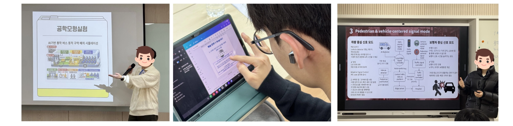

글로벌-지역을 잇는 정책 솔루션 설계
전 세계 30개국의 혁신 사례와 데이터를 분석하여 지역 사회 문제를 해결할 정책 솔루션을 설계합니다. 단순한 아이디어를 넘어 AI를 파트너로 해 글로벌 시각에서 탐구 주제를 발굴합니다.
다양한 전공 분야에 AI 기술을 접목하여 실천적인 솔루션을 도출하는 사회적 수요 기반의 고등 심화 AI 융복합 교육입니다.
전 세계 30개국의 혁신 사례와 데이터를 분석하여 지역 사회 문제를 해결할 정책 솔루션을 설계합니다. 단순한 아이디어를 넘어 AI를 파트너로 해 글로벌 시각에서 탐구 주제를 발굴합니다.
기존의 학습 경험을 진단하고 최신 트렌드를 결합한 깊이 있는 융합 탐구 모델을 구축합니다. 논문, 통계, 기사, 특허 등 4대 학술 데이터 분석으로 탐구의 이론적 타당성을 확보합니다.
기업과 대학에서 실제 사용되는 전문 사고 기법으로 탐구 주제의 창의성과 논리를 확보하고, 디지털 트윈 및 AI 시뮬레이션을 활용해 결과를 입증하는 완결형 팀 프로젝트로 진행됩니다.
인문학, 경영경제, 의료 및 생명과학, 공학, 융합형, 지역 문제 해결형 등 학교 수요와 대상 학생에 따른 맞춤형 설계로 전문적인 프로그램을 제공합니다.
데이터 분석 및 창의적 탐구 주제 발굴 기초 · 각 5차시 · 10차시 모듈
| 활동명 | 교육 내용 및 주요 활동 | 기대 효과 |
|---|---|---|
| 디지털 부루마블: 세계를 무대로 질문 던지기 | 경제, 문화, 정치, 의료, 과학·기술, 환경·ESG 등 17개 대분류에 따른 글로벌 이슈를 탐색하여 관심 분야와 연계된 혁신 사례 국가 선정 | 글로벌 관점의 자기 주도적 탐구 주제 발굴 |
| 데이터 갭(GAP) 분석: 한국과의 결정적 차이 발견 | 선택 국가와 국내 현황 지표를 대조하여 사회·정책적 차이를 분석하고 AI와 함께 탐구의 핵심 키워드 도출 | 데이터 분석 기반의 문제 정의 역량 강화 |
| AI 페르소나와의 협업을 통한 탐구 고도화 | 전문가 페르소나를 부여한 AI와 협업하며 글로벌 핵심 키워드를 접목한 지역 사회 문제 해결형 탐구 계획서 완성 | 글로벌-로컬 연계로 지역 사회 정책을 설계하는 실생활 문제 해결력 체득 |
전공 연계형 융합 탐구 설계
| 활동명 | 교육 내용 및 주요 활동 | 기대 효과 |
|---|---|---|
| 탐구 이력 진단에 따른 유형별 주제 고도화 | 기존 탐구 경험을 3개 유형(고도화·융합·확장)으로 진단하고, 최신 트렌드 키워드를 결합한 전공 심화 주제 도출 | 기존 학습 경험을 성찰하고, 현재와 연결해 깊이를 더하는 융합적 사고의 확장 |
| 4대 학술 데이터로 탐구 가설 검증 | 논문, 통계, 기사, 특허 데이터를 정밀 분석하여 탐구 가설을 뒷받침하는 이론적 배경과 객관적 근거 구축 | 탐구의 타당성을 확보하는 데이터 중심 논리 체계 정립 |
| 전문 사고 기법을 통한 탐구 고도화 | 전문 사고 기법을 적용하여 아이디어의 독창성을 확보하고, AI와 협업해 심화 탐구의 전 과정이 담긴 실행 계획서 완성 | 실천적 탐구 방안을 스스로 탐색 및 판단하며 나만의 탐구 경로 설계 |
팀 프로젝트형 심화 탐구
| 활동명 | 교육 내용 및 주요 활동 | 기대 효과 |
|---|---|---|
| 파괴적 질문을 통한 나만의 탐구 주제 찾기 | IF 기법으로 익숙한 전제를 뒤집고 전문가 1:1 밀착 코칭을 통해 실생활 문제 해결형 탐구의 논리적 뼈대 구축 | 고정관념을 뒤집어 난제를 정의하고, 새로운 해결책을 찾는 사고 훈련 |
| 실용 데이터와 전문 사고 기법을 통한 탐구 고도화 | 최신 이슈와 산업 기술 등 실용 데이터를 분석해 아이디어의 실현 가능성을 확보하고, 전문 사고 기법을 적용해 아이디어의 모순과 한계 극복 | 실제 사회에 기여할 수 있는 기술과 정책이 완결되기까지 전 주기 경험 |
| AI 시뮬레이션 설계로 탐구 결과 실증 | AI 설문모형 설계 및 디지털 트윈 공학 시뮬레이션을 활용해 탐구 가설을 검증하고, 결과 입증을 위한 수치 데이터 확보 | 실증 데이터 확보를 위한 탐구 모형 설계와 실행 역량 내재화 |
| 팀 프로젝트 기반 성과 공유 페임랩 | 탐구 전 과정을 시각화하여 성과 공유회(페임랩)를 진행하고, 개별 학생의 역량이 상세히 분석된 성찰 리포트로 탐구 완결 | 협력적 성취와 객관적 성찰 자료를 기반으로 탐구자로서의 자신감 경험 |

고등학교 1~3학년
(창의적 체험 활동, 학문 내·학문 간 융합 탐구, 교과 심화 프로그램 등)
모듈별 독립 운영 및
학년별/단계별 통합 패키지 구성 가능
학생 1인 1디바이스(태블릿 또는 노트북)
무선 인터넷 환경 구비
고교 심화 탐구를 위한 맞춤 설계를 제공합니다.
교육 문의 →